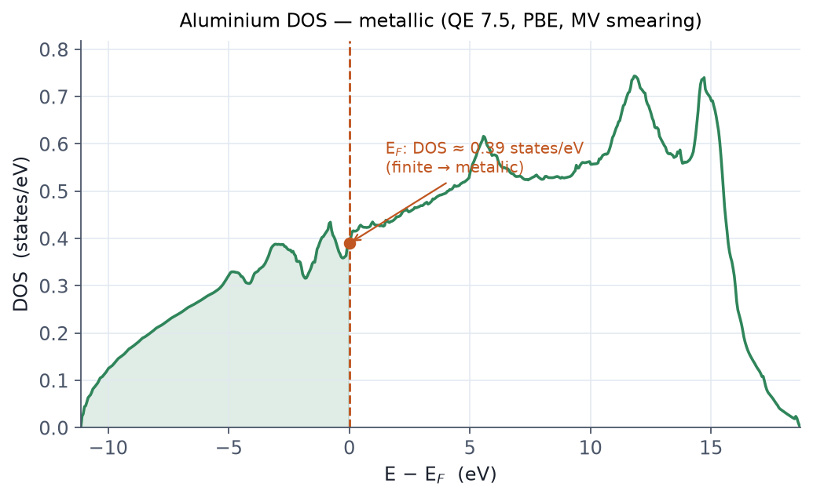

이 페이지에서 다룹니다
무엇을 하는 예제인가
반도체(실리콘)와 달리 금속은 페르미 준위가 밴드를 가로지르므로 점유가 급변합니다. 이 예제는 FCC 알루미늄을 smearing 으로 SCF하고, 페르미 준위와 페르미 준위에 상태가 존재하는(=금속) 상태밀도를 확인합니다.
관련 개념은 05 SCF와 수렴, 04 k점 샘플링 에서 다룹니다.
전체 입력 스크립트 — scf.in
&control
calculation = 'scf'
prefix='al', outdir='./out', pseudo_dir='./pseudo'
/
&system
ibrav=2, celldm(1)=7.65, nat=1, ntyp=1, ecutwfc=30, ecutrho=240
occupations='smearing'
smearing='mv' ! Marzari-Vanderbilt (cold)
degauss=0.02 ! 번짐 폭 (Ry)
/
&electrons
conv_thr=1.0d-8, mixing_beta=0.7
/
ATOMIC_SPECIES
Al 26.9815 Al.pbe-n-rrkjus_psl.1.0.0.UPF
ATOMIC_POSITIONS (alat)
Al 0.0 0.0 0.0
K_POINTS (automatic)
12 12 12 0 0 0
금속이라 occupations='smearing' 과 촘촘한 k점(12×12×12)이 필수입니다. 격자
상수 celldm(1)=7.65 bohr 는 Al의 약 4.05 Å 에 해당합니다.
실행
export OMP_NUM_THREADS=1
mpirun -np 8 pw.x -nk 8 -in scf.in > scf.out
출력 — 페르미 준위
반도체와 달리 페르미 준위가 출력됩니다(QE 7.5 실제 실행).
the Fermi energy is 7.7439 ev
! total energy = -5.04013796 Ry
상태밀도 — 금속성 확인
촘촘한 격자(24×24×24)로 nscf(tetrahedra) 후 dos.x 로 DOS를 구합니다.
mpirun -np 8 pw.x -nk 8 -in nscf.in > nscf.out # occupations='tetrahedra', 24 24 24
dos.x -in dosx.in > dosx.out # fildos='al.dos'

요점
- 금속은
occupations='smearing'+ 촘촘한 k점 없이는 거의 수렴하지 않습니다. smearing='mv'(cold)나'mp'는 전체 에너지의 degauss 의존성이 작아 널리 씁니다.- 페르미 준위에서 DOS가 0이 아니면 금속, 간격이 있으면 반도체·절연체입니다.
degauss를 바꾸면 k점 밀도도 다시 수렴을 확인해야 합니다.
관련 개념 챕터
앞 예제는 E2 — Si 밴드 + DOS, 다음은 E4 — 구조 최적화 입니다.